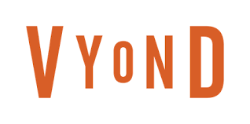

Vyond es una herramienta para crear animaciones, permite la sincronización de labios con el audio, animación de objetos, animación de personajes y personalización de marca.
También llamado lipsync, es una opción que hace que el personaje realice movimiento de boca sincronizado con el audio de tu voz. Lo único que tienes que hacer es indicarle a la plataforma si el audio que agregaste es para el personaje o es música. Y en automático el personaje comenzará a mover la boca.
Vyond tiene una biblioteca muy amplia de elementos que puedes agregar a tu escena, varios personajes prediseñados con cierto movimiento. La animación de un personaje se realiza a través de acciones que se puede elegir (emociones, comiendo, posiciones, deportes, compras, etc). Además permite crear personajes con ciertas características, elegir el tipo de personaje que necesita, mujer, hombre, niño, niña, agregar rasgos característicos como ojos, boca, nariz, así como, elegir la vestimenta, calzado y accesorios.
Vyond te permite importar imágenes, logos y audios para que se pueda adaptar el video de acuerdo a las necesidades del proyecto.
Esta herramienta contiene plantillas o templates para crear videos de gráficos, conceptuales, educativos, financieros, etc [5].
A continuación se muestra un videotutorial del uso de esta herramienta: